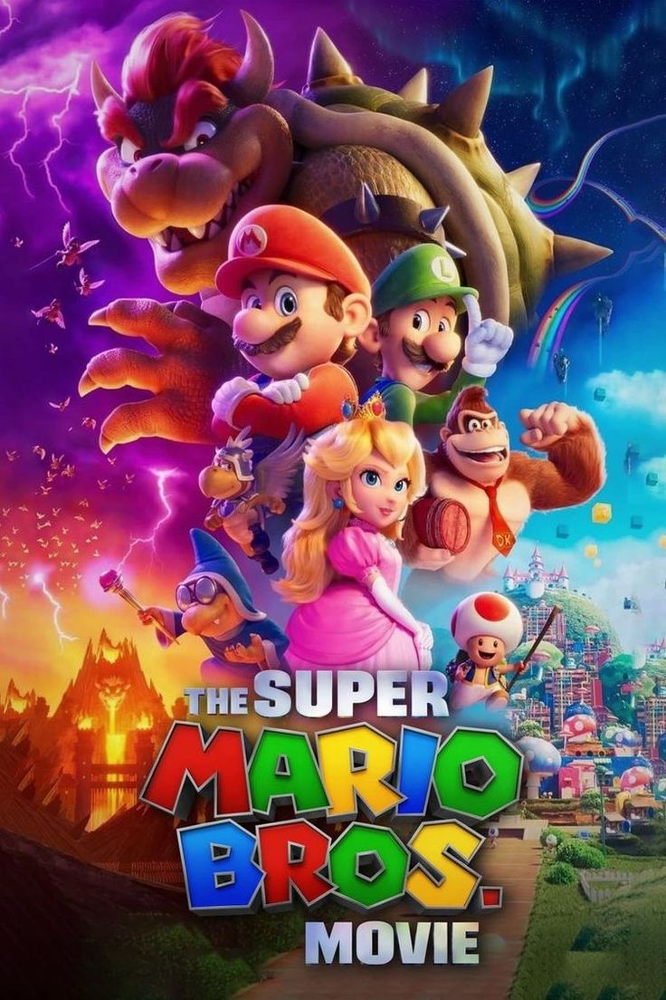

Adaptación de la serie de videojuegos de Nintendo. La película cuenta la historia de Mario y Luigi, dos hermanos que viajan a un mundo oculto para rescatar a la Princesa Peach, capturada por el malvado Rey Bowser. Las cosas, sin embargo no serán sencillas. Mario y Luigi tendrán que enfrentarse a un ejército de setas animadas antes de luchar contra su oponente. Rutas de ladrillos y castillos con múltiples peligros serán algunos de los obstáculos que los hermanos tendrán que superar para conseguir su objetivo.
Año: 2023
Duración: 92 min
País: Japón y Estados Unidos
Calificación por edades: Para mayores de 6
IMDb: 7,1/10
Opinión de la audiencia: 3,5/5
Crítica por un anónimo: A comienzos de los 90, los jugadores de consolas de todo el mundo se ilusionaban con la idea de ver en la gran pantalla al gran personaje de Nintendo: Super Mario. Pero lo que les ofrecieron los productores de Hollywood Pictures fue una extraña versión con Bob Hoskins como Mario y John Leguizamo como Luigi. Han transcurrido 30 años para que los aficionados puedan disfrutar de una película que respete a los personajes creados por Shigeru Miyamoto. Y es que sí, estamos ante la mejor obra basada en un videojuego que se ha hecho hasta ahora y es todo lo que los fans podían desear. Super Mario Bros. La película es un homenaje a la saga más relevante de Nintendo, que ha generado numerosos videojuegos distintos y se ha convertido en la más duradera y exitosa de la historia de la empresa. Llena de guiños para los fans y mucha aventura para los más pequeños, es el gran evento animado de 2023. Con menos humor que otras producciones de Illumination como Los minions: El origen de Gru, las bromas -que no significa que sea una película seria ni mucho menos- dejan espacio a mucha acción y algo de drama para dar más consistencia al conjunto. Al fin y al cabo es una producción para los aficionados al personaje y para los más pequeños, que quizá aún no han podido disfrutar de una videoconsola.